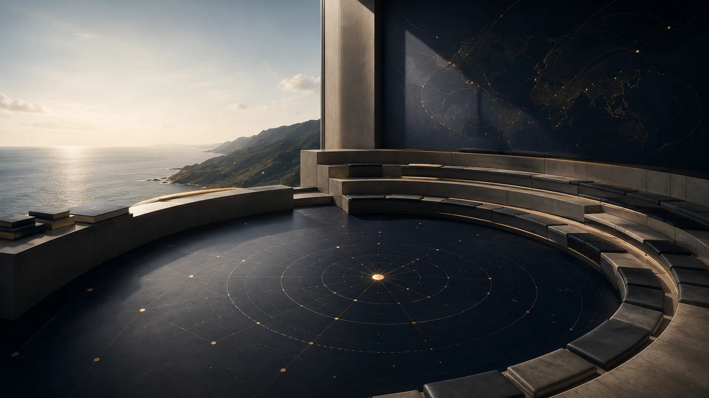

Interventions confirmées
Une prise de parole n'est isolée comme intervention que lorsqu'un rôle explicite et vérifiable le justifie.

Des événements documentés, interventions confirmées et cadres de dialogue qui relient droit de la mer, littoral, environnement, médiation, innovation et coopération.


Les événements présentés ne sont pas juxtaposés au hasard : ils rendent lisible une trajectoire entre institutions maritimes, politiques publiques, espaces littoraux, recherche, innovation et règlement des différends.
Chaque repère renvoie à la fiche détaillée, à son contexte et, lorsqu’elle existe, à une trace publique associée.
Une prise de parole n'est isolée comme intervention que lorsqu'un rôle explicite et vérifiable le justifie.
Colloques, séminaires, conférences, écoles d'été et journées d'étude suivis dans un cadre académique ou scientifique.
Sommet, dialogue politique, ateliers, journées mondiales et rencontres liées aux politiques publiques, à la mer et au littoral.
Formats courts suivis pour consolider des compétences en environnement marin, médiation, propriété intellectuelle ou entrepreneuriat.
Espaces Pépite, INNOV'ACTIONS, Emerging Valley, Pass Entreprendre et rencontres reliées à l'innovation et à l'économie bleue.
Les traces documentaires restent secondaires : elles accompagnent les événements sans publier de média sensible.
Les prises de parole ne sont isolées que lorsque le rôle est explicite. Les adhésions et plateformes sont présentées selon leur nature exacte.
Atelier Banque mondiale sur le projet WACA et panel scientifique sur la pollution des eaux à Abidjan en 2017.
SFdP et AFIM sont situés comme réseaux confirmés, sans les présenter comme employeurs ou partenaires institutionnels du site.
OceanExpert et Ocean Decade Network sont présentés comme plateforme scientifique et réseau international, avec leur statut propre.
Sommet de Lomé, accord du Cap, Convention d'Abidjan, WACA, journées environnementales et Dialogue des politiques à Abidjan structurent un premier ensemble maritime, institutionnel et environnemental.
COP24 / COY14, contentieux de la délimitation maritime africaine, économie bleue dans le Golfe de Guinée et arbitrage forment un deuxième ensemble juridique et international.
ERSUMA/OHADA, Euromaritime, colloque sûreté maritime et travaux autour de l'obligation de protéger le milieu marin prolongent les liens entre droit, sécurité, innovation et environnement.
PROTEUS, MedPAN, Forum Mouillage Méditerranée, Pépite Provence, Emerging Valley, INDEMER et Académies de marine européennes inscrivent la trajectoire dans des espaces méditerranéens, scientifiques et entrepreneuriaux.
Consulter les traces documentaires publiables ou conservées prudemment en lien avec les événements.
AxesRelier les participations aux orientations structurantes du site OBY.
ExplorerParcourir les sujets, ressources et liens intellectuels associés.
VeilleSuivre quelques repères institutionnels et académiques liés aux mêmes domaines.
Cette sélection rassemble des sources officielles exactes, des traces institutionnelles utiles et quelques supports publics associés aux événements déjà cités. Ces liens situent les cadres de participation sans transformer une présence à un événement en intervention ou en partenariat.
Sommet de Lomé, accord du Cap, Dialogue des politiques et Journée mondiale de la mer structurent la lecture institutionnelle maritime.
Convention d'Abidjan, WACA, COP24 / COY14, PNUD océans et pollutions des eaux relient climat, littoral et action publique.
INDEMER, PROTEUS, MedPAN, Forum Mouillage et Aix-Marseille situent les usages de la mer dans des terrains méditerranéens.
ERSUMA / OHADA, arbitrage, médiation administrative et délimitation maritime montrent l'attention portée aux modes de règlement.
Les terrains, visites institutionnelles et voyages d’étude permettent d’ancrer le parcours OBY dans des lieux, des paysages, des usages et des institutions. De la Méditerranée au Golfe de Guinée, ces expériences relient géographie littorale, droit de la mer, gouvernance maritime, environnement, aménagement et observation concrète des vulnérabilités.
Île de Porquerolles dans le cadre de l'atelier régional MedPAN / Parc national de Port-Cros ; Parc national des Calanques, Madrague de Montredon, Les Goudes et rade sud de Marseille dans le cadre du M2 COAST et de la GIZC ; Fréjus / Saint-Aygulf autour de la plage, du barrage de Malpasset et du port antique ; L'Estaque avec M. Morhange ; Parc naturel régional du Luberon comme terrain d'observation territoriale et environnementale.
Visite de la DIRM Méditerranée et de FNE Marseille dans le cadre de l'UE GIZC du M2 COAST ; stage et immersion institutionnelle auprès du SEP-CIM AEM / Primature de Côte d'Ivoire à Abidjan ; stage international avec bourse au Tribunal international du droit de la mer à Hambourg ; visites institutionnelles associées aux Cours d'hiver de l'Académie de droit international de La Haye.
Participation à la COY / COP24 à Katowice dans un cadre climat, jeunesse, gouvernance environnementale et coopération internationale ; visite de terrain à Yamoussoukro dans le cadre du séminaire JICA / INFJ ; participation aux side events du Sommet de Lomé sur la sécurité, la sûreté maritime et le développement en Afrique.
Certains cadres renforcent la crédibilité du parcours sans relever d'une intervention publique. Ils sont donc situés à part, comme expériences, responsabilités ou réseaux documentés.
Repère institutionnel associé au droit international de la mer et au règlement des différends maritimes.
Bourse académique liée à un cadre de formation spécialisé en droit international.
Responsabilités exercées dans un cadre associatif juridique, sans assimilation à une fonction institutionnelle publique.
Cadres documentés qui prolongent l'attention portée aux territoires, aux futurs possibles et aux vulnérabilités littorales.
Repère associé à la médiation, au règlement amiable, à l'impartialité, au dialogue et à la gouvernance des différends.
Inscription sur OceanExpert, annuaire international de professionnels et d'acteurs liés aux sciences marines et aux ressources aquatiques, en cohérence avec les axes OBY sur les océans, le littoral, la gouvernance maritime et les réseaux scientifiques internationaux.
Repère international lié à la Décennie des sciences océaniques pour le développement durable, en cohérence avec les axes OBY sur les sciences océaniques, la gouvernance de l'océan, la coopération internationale, l'Afrique, l'Europe, la Méditerranée et le Golfe de Guinée.
Participation reliée à la gouvernance internationale des océans, au droit de la mer, aux institutions maritimes et aux dynamiques de coopération.
Participation à un espace scientifique consacré aux usages contemporains de la mer et à leurs cadres juridiques.
Présence dans un cadre européen de réflexion sur les cultures maritimes, les institutions et les usages de la mer.
Participation à un événement reliant droit international, protection du milieu marin et responsabilité des États.
Participation à un cadre spécialisé sur la sûreté maritime et les enjeux stratégiques liés aux espaces maritimes.
Participation à un dialogue institutionnel sur la gouvernance maritime, les ressources et le développement durable en Afrique.
Participation à un espace régional consacré à la protection de l'environnement marin et côtier en Afrique.
Participation à un atelier reliant océans, engagement international et priorités institutionnelles ivoiriennes.
Participation à un séminaire régional sur la sécurité des navires de pêche et les normes applicables.
Participation aux espaces parallèles d'un sommet consacré à la sécurité maritime, à la sûreté maritime et au développement en Afrique.
Participation à un événement institutionnel ivoirien consacré aux enjeux maritimes et à l'action publique en mer.
Repère lié à l'aménagement, à la biodiversité, aux solutions fondées sur la nature, à l'adaptation territoriale et à la gestion des transitions environnementales.
Participation à un cadre de réflexion sur la protection de l'environnement méditerranéen et les vulnérabilités littorales.
Formation intensive reliant savoir scientifique, pollution marine et passage à l'action collective.
Participation à l’École d’été Océan 2026 consacrée aux pollutions plastiques dans l’environnement marin, organisée dans l’écosystème de l’Institut des Sciences de l’Océan / Aix-Marseille Université. Cette séquence a réuni cours, travaux pratiques, sortie de terrain et approches interdisciplinaires autour des méthodes de mesure, des enjeux réglementaires et des moyens d’action face aux pollutions plastiques.
Participation à un espace institutionnel sur le mouillage, les usages maritimes et la protection des milieux.
Participation à une journée d'étude sur les transitions méditerranéennes et la résilience des territoires.
Entretien publié sur le carnet PROTEUS présentant le parcours de Joseph Ouaga, son articulation entre droit, mer, géographie, littoral, prospective et gestion des territoires, ainsi que sa contribution au projet PROTEUS autour des aires marines protégées, des conflits d'usage, des scénarios méditerranéens et de la communication du projet.
Atelier de terrain sur le tourisme, les aires marines protégées et la gestion des usages littoraux.
Participation à un espace SHS sur la prospective, les imaginaires et les transitions territoriales.
Participation à un dialogue académique sur l'économie bleue durable et les usages de la Méditerranée.
Participation à une réflexion juridique sur compensation écologique, environnement et territoires.
Participation à un cadre de travail sur l'adaptation côtière, le littoral ouest-africain et la résilience.
Rôle de participant et rapporteur dans un atelier consacré à la gestion du littoral et aux risques côtiers.
Participation et rapport de panel sur la pollution des eaux, les enjeux environnementaux et les réponses possibles.
Participation à un panel associant environnement, océan et sensibilisation aux enjeux littoraux.
Participation dans un cadre climat international, en lien avec littoral, jeunesse et responsabilité environnementale.
Participation à un séminaire reliant sécurité maritime, économie bleue et Golfe de Guinée.
Participation à un échange sur les liens entre sécurisation des océans, coopération et économie bleue.
Participation à un salon professionnel autour des filières maritimes, de l'innovation et de la croissance bleue.
Participation à la première édition des Rencontres de l’Économie Bleue, réunissant recherche, acteurs économiques, institutions publiques et monde maritime autour de la durabilité, de l’interdisciplinarité et du développement de liens intersectoriels au service de l’économie de la mer.
Participation à un événement orienté innovation, solutions de terrain et culture de projet.
Participation à un espace Afrique-Europe consacré à l'innovation, aux écosystèmes entrepreneuriaux et aux transitions.
Participation à un cadre d'échanges entre étudiants entrepreneurs, accompagnement et structuration de projets.
Atelier suivi sur les mécanismes de financement participatif et la maturation de projets.
Webinaire suivi sur propriété intellectuelle, protection des idées et parcours entrepreneurial.
Participation à un forum universitaire consacré à l'entrepreneuriat étudiant et aux projets à impact.
Contribution à la présentation de Pépite auprès d'étudiants, selon le statut d'ambassadeur indiqué.
Participation à un espace Pépite consacré aux parcours de recherche, d'innovation et de projet.
Participation à un échange entre acteurs juridiques et entrepreneurs autour des besoins d'accompagnement.
Participation à un dispositif d'accompagnement entrepreneurial, présenté sans statut commercial.
Participation à un temps d'échanges Pépite autour des projets, réseaux et apprentissages entrepreneuriaux.
Participation à un atelier sur l'impact, la cohérence de projet et les besoins de terrain.
Participation à un échange spécialisé sur les différends de délimitation maritime et leurs enjeux africains.
Participation à une conférence reliant propriété intellectuelle, espace OHADA et protection des droits.
Participation à un colloque sur arbitrage, investissements et mutations du droit économique africain.
Participation à un webinaire sur médiation administrative, adaptation des pratiques et règlement amiable.